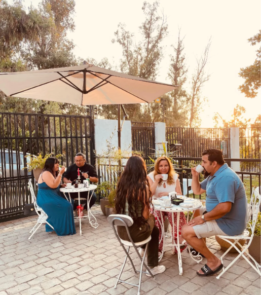
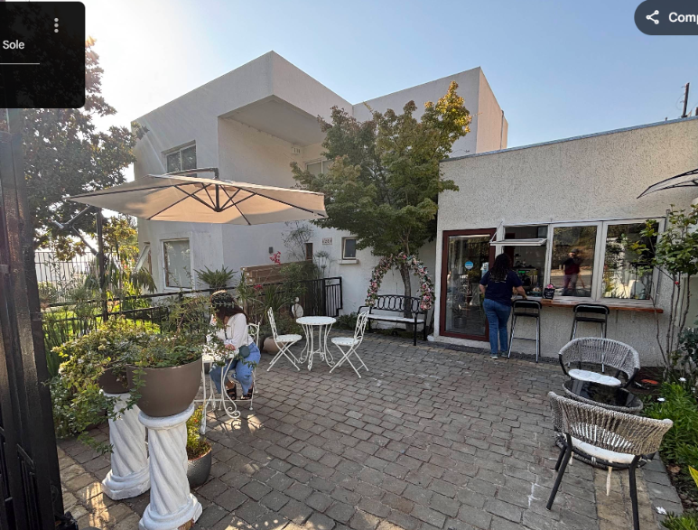
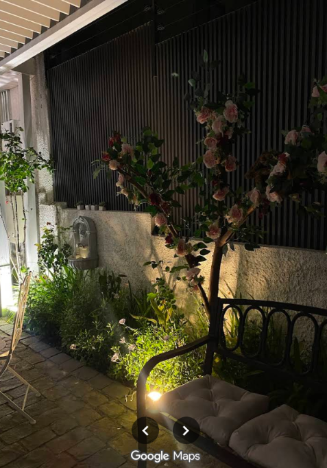

Bienvenido a Uhlala Café. Un refugio en la altura de Macul Alto decorado con flores y mesas blancas, donde puedes contemplar toda la ciudad. Disfruta de una taza perfecta preparada con dedicación por su propia dueña, en un ambiente acompañado de jazz suave y conexión wifi.


En Uhlala Café, cada detalle es supervisado y elaborado por su propia dueña. Con una hospitalidad cercana y cariñosa, te recibimos en un entorno de ensueño con mesas blancas y flores en cada rincón.
Aquí, toda la pastelería y las preparaciones son hechas a mano con ingredientes seleccionados. Creemos que la combinación de un café de especialidad excelente, repostería casera y un ambiente de paz es el verdadero lujo cotidiano.
El café de especialidad es personal. Responde tres preguntas simples y te recomendaremos la taza y el método de preparación idóneos para tu estado de ánimo de hoy.

Rodeado de flores frescas en todos los bordes y bajo la suave melodía del jazz, nuestro espacio ofrece el equilibrio perfecto entre calidez y modernidad. Ya sea para trabajar con nuestro wifi de alta velocidad o contemplar el atardecer sobre la ciudad, aquí el tiempo se detiene.
En Uhlala Café no realizamos reservas previas. Con el fin de preservar el dinamismo de nuestra barra y brindar una experiencia justa, exclusiva y espontánea para cada uno de nuestros selectos clientes, atendemos únicamente por orden de llegada.
Av. Macul Alto 6204
Comuna de La Florida, Santiago
La opinión de quienes aprecian la consistencia y la elegancia en cada taza.
La atención personalizada de su dueña marca la diferencia. Tomar un Geisha delicioso mientras contemplas el atardecer sobre Santiago desde la terraza de mesas blancas es inigualable.
El patio rodeado de flores y mesas blancas es un verdadero oasis. Vengo a trabajar con el wifi al ritmo de jazz suave, la desconexión es total y toda la pastelería es exquisita.
Cada visita es única. Ver el atardecer desde la altura de Macul Alto con un café de especialidad y algo dulce preparado con tanto cariño por la dueña es mi momento favorito de la semana.